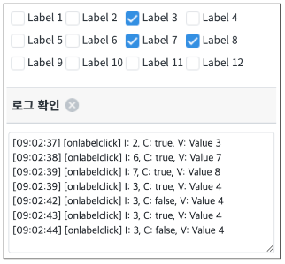
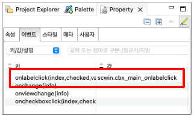

CheckBox의 onlabelclick 이벤트 예제입니다. onlabelclick 이벤트는 선택 항목의 label을 클릭할 때 발생하는 이벤트입니다. 주의할 점은 checkbox가 클릭 됐을 때는 발생하지 않습니다.
onlabelclick 이벤트 사용하기
이벤트를 발생시키면 로그 영역에 로그가 출력됩니다.
주의할 점은 label을 클릭 할 때 이벤트가 발생하고 checkbox를 클릭할 때는 발생하지 않는다는 점 입니다.
그림 1.브라우저(Chrome) 실행 예시

STEP 1. CheckBox의 이벤트를 정의합니다.
컴포넌트의 Property View의 이벤트 탭에서 onlabelclick 이벤트를 명시하고 Script를 작성합니다.
그림 2.웹스퀘어5 SP5 스튜디오의 Property View(이벤트 창) 예시

/* CheckBox의 onlabelclick 이벤트 */
scwin.cbx_main_onlabelclick = function (index, checked, value) {
// 로그 출력
let strLog = "[onlabelclick] I: " + index
+ ", C: " + checked
+ ", V: " + value;
$c.frame.printExampleLog(strLog, txa_log, false);
console.log(strLog);
};<xf:select ... style="" ev:onlabelclick="cbx_main_onlabelclick" ... >
<xf:choices>
<xf:item>
<xf:label><![CDATA[Label 1]]></xf:label>
<xf:value><![CDATA[1]]></xf:value>
</xf:item>
<!-- 중략 -->
</xf:choices>
</xf:select>onlabelclick(index, checked, value)